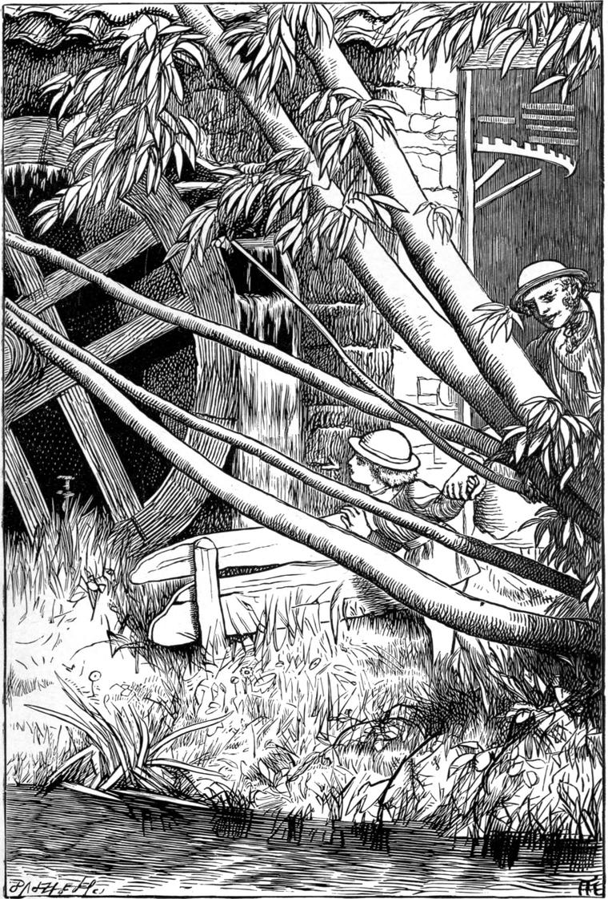

When his father found that he had learned to read, then he judged it good for him to go to school. Willie was very much pleased. His mother said she would make him a bag to carry his books in; but Willie said there was no occasion to trouble herself; for, if she would give him the stuff, he would make it. So she got him a nice bit of green baize, and in the afternoon he made his bag—no gobble-stitch work, but good, honest back-stitching, except the string-case, which was only run, that it might draw easier and tighter. He passed the string through with a bodkin, fixed it in the middle, tied the two ends, and carried the bag to his mother, who pronounced it nearly as well made as if she had done it herself.
At school he found it more and more plain what a good thing it is that we haven't to find out every thing for ourselves from the beginning; that people gather into books what they and all who went before them have learned, so that we come into their property, as it were; and, after being taught of them, have only to begin our discoveries from where they leave off. In geography, for instance, what a number of voyages and journeys have had to be made, and books to record them written; then what a number of these books to be read, and the facts gathered out of them, before a single map could be drawn, not to say a geography book printed! Whereas now he could learn a multitude of things about the various countries, their peoples and animals and plants, their mountains and rivers and lakes and cities, without having set his foot beyond the parish in which he was born. And so with everything else after its kind. But it is more of what Willie learned to do than what he learned to know that I have to treat.
When he went to school, his father made him a present of a pocket-knife. He had had one before, but not a very good one; and this, having three blades, all very sharp, he found a wonderful treasure of recourse. His father also bought him a nice new slate.
Now there was another handy boy at school, a couple of years older than Willie, whose father was a carpenter. He had cut on the frame of his slate, not his initials only, but his whole name and address,—Alexander Spelman, Priory Leas. Willie thought how nice it would be with his new knife also to cut his name on his slate; only he would rather make some difference in the way of doing it. What if, instead of sinking the letters in the frame, he made them stand up from the frame by cutting it away to some depth all round them. There was not much originality in this, for it was only reversing what Spelman had done; but it was more difficult, and would, he thought, be prettier. Then what was he thus to carve? One would say, "Why, William Macmichael, of course, and, if he liked, Priory Leas" But Willie was a peculiar little fellow, and began to reason with himself whether he had any right to put his own name on the slate. "My father did not give me the slate," he said, "to be my very own. He gave me the knife like that, but not the slate. When I am grown up, it will belong to Agnes. What shall I put on it? What's mine's papa's, and what's papa's is his own," argued Willie.—"I know!" he said to himself at last.
The boys couldn't imagine what he meant to do when they saw him draw first a D and then an O on the frame. But when they saw a C and a T follow, they thought what a conceited little prig Willie was!
"Do you think you're a doctor because your father is, you little ape?" they said.
"No, no," answered Willie, laughing heartily, but thinking, as he went on with his work, that he might be one some day.
When the drawing of the letters was finished, there stood, all round the slate, "Doctor Macmichael's Willie, The Ruins, Priory Leas."
Then out came his knife. But it was a long job, for Willie was not one of those slovenly boys that scamp their work. Such boys are nothing but soft, pulpy creatures, who, when they grow to be men, will be too soft for any of the hard work of the world. They will be fit only for buffers, to keep the working men from breaking their heads against each other in their eagerness. But the carving was at length finished, and gave much satisfaction—first to Willie himself, because it was finished; next, to Alexander Spelman, Priory Leas, because, being a generous-minded boy, he admired Willie's new and superior work; third, to Mr and Mrs Macmichael, because they saw in it, not the boy's faculty merely, but his love to his father as well; for the recognition of a right over us is one of the sweetest forms love can take. "I am yours" is the best and greatest thing one can say, if to the right person.
It led to a strong friendship between him and Spelman, and to his going often to the workshop of the elder Spelman, the carpenter.
He was a solemn, long-faced, and long-legged man, with reddish hair and pale complexion, who seldom or ever smiled, and at the bench always looked as if he were standing on a stool, he stooped so immoderately. A greater contrast than that between him and the shoemaker could hardly have been found, except in this, that the carpenter also looked sickly. He was in perfect health, however, only oppressed with the cares of his family, and the sickness of his wife, who was a constant invalid, with more children her husband thought than she could well manage, or he well provide for. But if he had thought less about it he would have got on better. He worked hard, but little fancied how many fewer strokes of his plane he made in an hour just because he was brooding over his difficulties, and imagining what would be the consequences if this or that misfortune were to befall him—of which he himself sought and secured the shadow beforehand, to darken and hinder the labour which might prevent its arrival. But he was a good man nevertheless, for his greatest bugbear was debt. If he could only pay off every penny he owed in the world, and if only his wife were so far better as to enjoy life a little, he would, he thought, be perfectly happy. His wife, however, was tolerably happy, notwithstanding her weak health, and certainly enjoyed life a good deal—far more at least than her husband was able to believe.
Mr Macmichael was very kind and attentive to Mrs Spelman; though, as the carpenter himself said, he hadn't seen the colour of his money for years. But the Doctor knew that Spelman was a hard-working man, and would rather have given him a little money than have pressed him for a penny. He told him one day, when he was lamenting that he couldn't pay him even yet, that he was only too glad to do anything in the least little bit like what the Saviour did when he was in the world—"a carpenter like you, Spelman—think of that," added the Doctor.
So Spelman was as full of gratitude as he could hold. Except Hector Macallaster, the Doctor was almost his only creditor. Medicine and shoes were his chief trials: he kept on paying for the latter, but the debt for the former went on accumulating.
Hence it came that when Willie began to haunt his shop, though he had hardly a single smile to give the little fellow, he was more than pleased;—gave him odds and ends of wood; lent him whatever tools he wanted except the adze—that he would not let him touch; would drop him a hint now and then as to the use of them; would any moment stop his own work to attend to a difficulty the boy found himself in; and, in short, paid him far more attention than he would have thought required of him if Willie had been his apprentice.
From the moment he entered the workshop, Willie could hardly keep his hands off the tools. The very shape of them, as they lay on the bench or hung on the wall, seemed to say over and over, "Come, use me; come, use me." They looked waiting, and hungry for work. They wanted stuff to shape and fashion into things, and join into other things. They wanted to make bigger tools than themselves—for ploughing the earth, for carrying the harvest, or for some one or other of ten thousand services to be rendered in the house or in the fields. It was impossible for Willie to see the hollow lip of the gouge, the straight lip of the chisel, or the same lip fitted with another lip, and so made into the mouth of the plane, the worm-like auger, or the critical spokeshave, the hammer which will have it so, or the humble bradawl which is its pioneer—he could see none of them without longing to send his life into theirs, and set them doing in the world—for was not this what their dumb looks seemed ever to implore? At that time young Spelman was busy making a salt-box for his mother out of the sound bits of an old oak floor which his father had taken up because it was dry-rotted. It was hard wood to work, but Willie bore a hand in planing the pieces, and was initiated into the mysteries of dovetailing and gluing. Before the lid was put on by the hinges, he carved the initials of the carpenter and his wife in relief upon it, and many years after they used to show his work. But the first thing he set about making for himself was a water-wheel.
If he had been a seaside boy, his first job would have been a boat; if he had lived in a flat country, it would very likely have been a windmill; but the most noticeable thing in that neighbourhood was a mill for grinding corn driven by a water-wheel.
When Willie was a tiny boy, he had gone once with Farmer Thomson's man and a load of corn to see the mill; and the miller had taken him all over it. He saw the corn go in by the hopper into the trough which was the real hopper, for it kept constantly hopping to shake the corn down through a hole in the middle of the upper stone, which went round and round against the lower, so that between them they ground the corn to meal, which, in the story beneath, he saw pouring, a solid stream like an avalanche, from a wooden spout. But the best of it all was the wheel outside, and the busy rush of the water that made it go. So Willie would now make a water-wheel.
The carpenter having given him a short lecture on the different kinds of water-wheels, he decided on an undershot, and with Sandy's help proceeded to construct it—with its nave of mahogany, its spokes of birch, its floats of deal, and its axle of stout iron-wire, which, as the friction would not be great, was to run in gudgeon-blocks of some hard wood, well oiled. These blocks were fixed in a frame so devised that, with the help of a few stones to support it, the wheel might be set going in any small stream.

There were many tiny brooks running into the river, and they fixed upon one of them which issued from the rising ground at the back of the village: just where it began to run merrily down the hill, they constructed in its channel a stonebed for the water-wheel—not by any means for it to go to sleep in!
It went delightfully, and we shall hear more of it by and by. For the present, I have only to confess that, after a few days, Willie got tired of it—and small blame to him, for it was of no earthly use beyond amusement, and that which can only amuse can never amuse long. I think the reason children get tired of their toys so soon is just that it is against human nature to be really interested in what is of no use. If you say that a beautiful thing is always interesting, I answer, that a beautiful thing is of the highest use. Is not a diamond that flashes all its colours into the heart of a poet as useful as the diamond with which the glazier divides the sheets of glass into panes for our windows? Anyhow, the reason Willie got tired of his water-wheel was that it went round and round, and did nothing but go round. It drove no machinery, ground no grain of corn—"did nothing for _no_body," Willie said, seeking to be emphatic. So he carried it home, and put it away in a certain part of the ruins where he kept odds and ends of things that might some day come in useful.
Mr Macmichael was so devoted to his profession that he desired nothing better for Willie than that he too should be a medical man, and he was more than pleased to find how well Willie's hands were able to carry out his contrivances; for he judged it impossible for a country doctor to have too much mechanical faculty. The exercise of such a skill alone might secure the instant relief of a patient, and be the saving of him. But, more than this, he believed that nothing tended so much to develop common sense—the most precious of faculties—as the doing of things with the hands. Hence he not only encouraged Willie in everything he undertook, but, considering the five hours of school quite sufficient for study of that sort, requested the master not to give him any lessons to do at home. So Willie worked hard during school, and after it had plenty of time to spend in carpentering, so that he soon came to use all the common bench-tools with ease, and Spelman was proud of his apprentice, as he called him—so much so, that the burden of his debt grew much lighter upon his shoulders.
But Willie did not forget his older friend, Hector Macallaster. Every half-holiday he read to him for a couple of hours, chiefly, for some time, from Dick's Astronomy. Neither of them understood all he read, but both understood much, and Hector could explain some of the things that puzzled Willie. And when he found that everything went on in such order, above and below and all about him, he began to see that even a thing well done was worth a good deal more when done at the right moment or within the set time; and that the heavens themselves were like a great clock, ordering the time for everything.
Neither did he give up shoemaking, for he often did a little work for Hector, who had made him a leather apron, and cut him out bits of stout leather to protect his hands from the thread when he was sewing. For twelve months, however, his chief employment lay in the workshop of the carpenter.